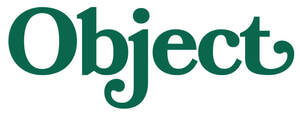

Trade Mark Journal No.2025/021 23 May 2025
UK00004202628 13 May 2025 (38,41)

- Class 38
- Podcasting; Videocasting; Podcasting services; Streaming audio and video material on the Internet; Video, audio and television streaming services; Streaming of audio material on the internet; Streaming of video material on the internet.
- Class 41
- Art exhibitions; Art gallery services; Gallery services (Art -); Art exhibition services; School services for the teaching of art; Education academy services for teaching art history; Cultural, educational or entertainment services provided by art galleries; Conducting workshops and seminars in art appreciation; Conducting of workshops and seminars in art appreciation; Instruction in the field of the visual arts; Writing of texts; Publishing, reporting, and writing of texts; Writing services for blogs; Creation [writing] of podcasts; Writing and publishing of texts, other than publicity texts; Writing of texts, other than publicity texts; Texts (Writing of -), other than publicity texts; Writing of texts [other than publicity texts]; Creation [writing] of educational content for podcasts; Book and review publishing; Book publishing; Custom writing services for non-advertising purposes; Editing of written texts, other than publicity texts; Publishing of stories; Publishing of instructional books; Publishing of books; Multimedia publishing of books; Publishing; Publishing of books and reviews; Freelance journalism; Consultation services relating to the publication of written texts; Publishing of reviews; Publishing of journals; Publishing services for books; Publication and editing of printed matter; Multimedia publishing of journals; Publishing of electronic books and journals online; Publication of books relating to entertainment; Publishing of books, magazines; Publishing of documents; Publishing of electronic books and journals on-line; Providing on-line non-downloadable video content; Providing online videos, not downloadable; Video recordings [not downloadable] provided from the internet; Providing on-line videos, not downloadable; Providing video entertainment via a website; Video editing; Audio and video editing services; Audio and video recording services; Audio, film, video and television recording services; Video recording services; Digital video, audio and multimedia entertainment publishing services; Editing of video recordings; Providing online images, not downloadable; Entertainment services for sharing audio and video recordings; Audio, video and multimedia production, and photography; Video entertainment services; Sound recording and video entertainment services; Entertainment; Interactive entertainment; Production of audio entertainment; Television entertainment; Audio entertainment services; Showing of prerecorded entertainment; Online interactive entertainment; Production of television entertainment features; Television entertainment services; Interactive entertainment services; Audio and video production, and photography; On-line entertainment; Tv entertainment services; Services in the production of animated motion picture entertainment; Radio entertainment; Live entertainment; Services for the production of entertainment in the form of television; Production of live entertainment; Video production; Production of pre-recorded video films; Production of live entertainment features; Television and radio entertainment services; Radio and television entertainment services; Television and radio entertainment; Radio and television entertainment; Radio entertainment production; Presentation of live entertainment events; Video production services; Live entertainment production services; Film production for entertainment purposes; Production of entertainment in the form of a television series; Live entertainment services; Video taping; Radio entertainment services; Online entertainment services; Audio-visual display presentation services for entertainment purposes.
Object Stories Ltd